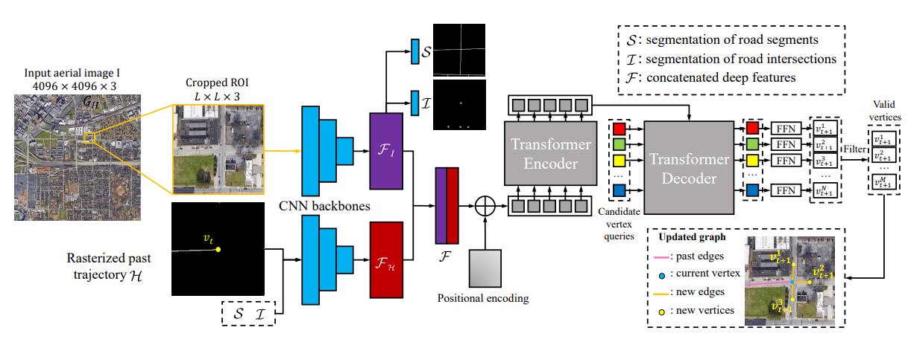
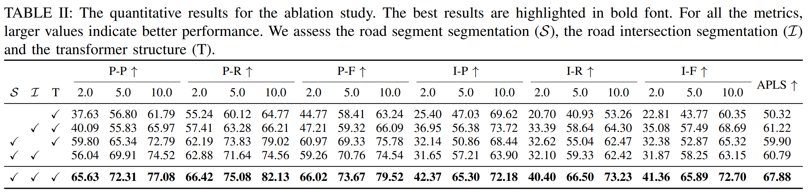

RNGDet: Road Network Graph Detection by Transformer in Aerial Images
Authors: Zhenhua Xu, Yuxuan Liu, Lu Gan, Yuxiang Sun, Ming Liu and Lujia Wang
Abstract
Road network graphs provide critical information for autonomous-vehicle applications, such as drivable areas that can be used for motion planning algorithms. To find road network graphs, manually annotation is usually inefficient and labor-intensive. Automatically detecting road network graphs could alleviate this issue, but existing works still have some limitations. For example, segmentation-based approaches could not ensure satisfactory topology correctness, and graph-based approaches could not present precise enough detection results. To provide a solution to these problems, we propose a novel approach based on transformer and imitation learning in this paper. In view of that high-resolution aerial images could be easily accessed all over the world nowadays, we make use of aerial images in our approach. Taken as input an aerial image, our approach iteratively generates road network graphs vertex-by-vertex. Our approach can handle complicated intersection points with various numbers of incident road segments. We evaluate our approach on a publicly available dataset. The superiority of our approach is demonstrated through the comparative experiments.
Implementation code
RNGDet is used as a baseline in our latest work RNGDet++. Please refer to our github page.
Demo video
System diagram

Comparison results

Ablation studies
